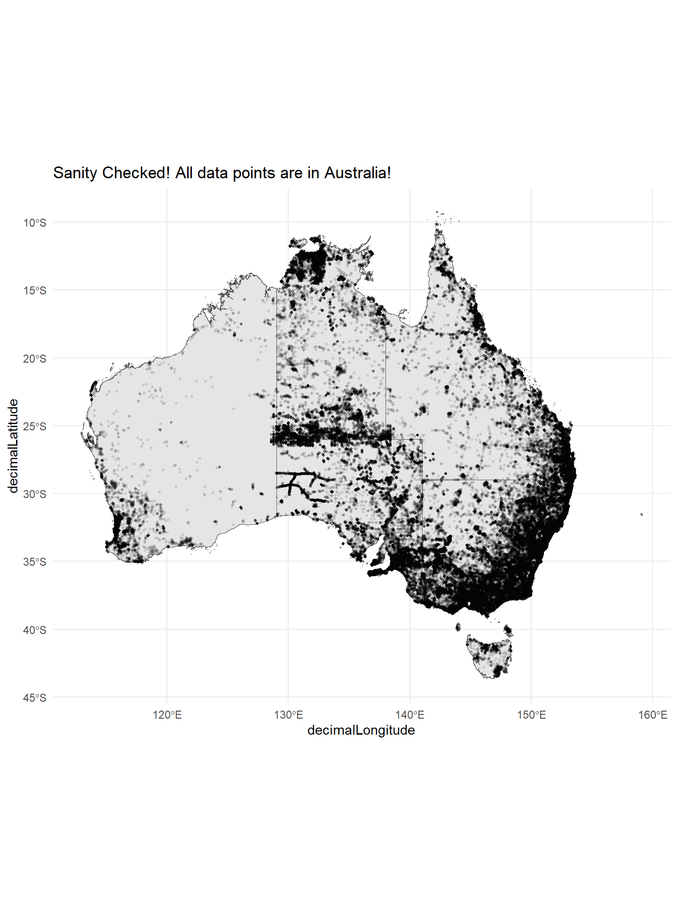
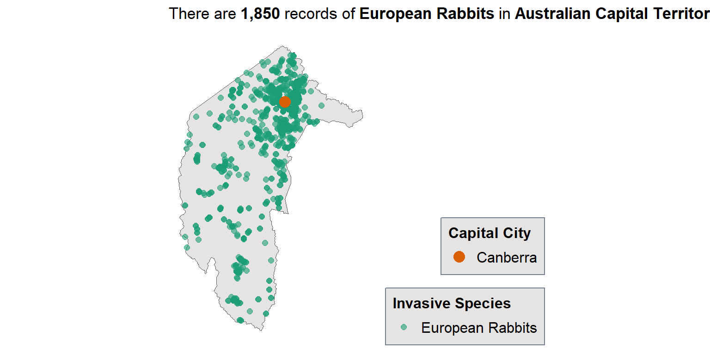
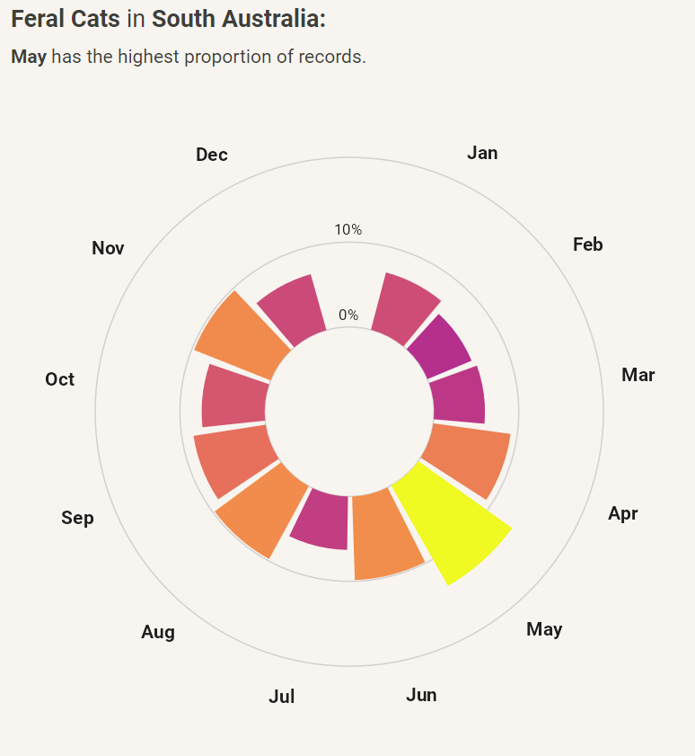
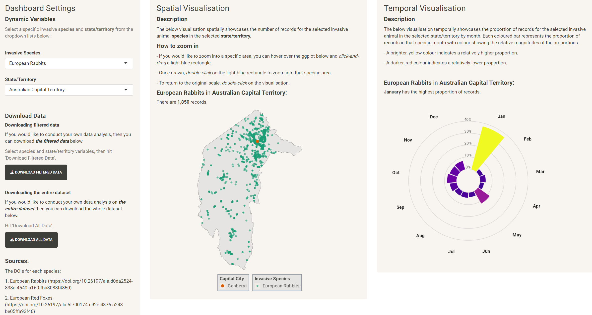

### Purpose:
# To load the occurrence data of any species within the Atlas
# of Living Australia.
suppressPackageStartupMessages({
library(galah)
})
galah_config(email = "johann.wagner@gmail.com")
load_galah_occurrence_data <- function(
# scientific name
species_name
) {
species_occurrence <- galah_call() |>
# To conduct a search for species scientific name
galah_identify(species_name) |>
# Pre-applied filter to ensure quality-assured data
# the "ALA" profile is designed to exclude lower quality records
galah_apply_profile(ALA) |>
atlas_occurrences(mint_doi = TRUE)
return(species_occurrence)
}
# References:
# - [1] https://bie.ala.org.au/species/https://biodiversity.org.au/afd/taxa/692effa3-b719-495f-a86f-ce89e2981652
# - [2] https://galah.ala.org.au/R/reference/galah_apply_profile.htmlInvasive Animal Species Dashboard
Data Projects
Exploratory Data Analysis
University Assignment
University Assignment: Developing an RShiny dashboard to visualise invasive animal species in Australia
Brief Context
This is a university assignment for the course Data Science for Biology at the Australian National University (ANU). The purpose of the assignment was to formulate a research question, use R and a relevant dataset to address the question and communicate the analysis into a report and a poster.
I developed an RShiny Dashboard visualising seven different invasive species by state/territory using ALA data through the galah package with a focus on spatial and temporal visualisations. The dashboard also allows users to download the cleaned dataset for the selected invasive animal species for a particular state/territory.
The Dashboard is available here.
The GitHub repository is available here.
Enjoy! :)
Data Description
The data used is from The Atlas of Living Australia (ALA), which is “a collaborative, digital and open infrastructure repository that aggregates biodiversity data from multiple sources” (ALA, 2022).
Specifically, this analysis uses species occurrence records for seven invasive animal species:
I was interested in the spatial and temporal variables for all 7 species, particularly the longitude and latitude values (decimalLongitude and decimalLatitude) and date of recording (eventDate) for each record.
Questions/Aims
Initial Aims:
Develop an RShiny app that showcases the spatial and temporal (monthly) occurrence of
the top 5-107 invasive animal species in Australia by state/territoryand by regionality (urban vs. regional)Visualise and calculate the proportion of the selected invasive animal species observed in an urban areaCreate a download option for users to download the cleaned dataset for the selected invasive animal species for a particular state/territory
Justifications:
Initially, I was interested in the spatial distribution of magpies in Canberra as I’m an avid cyclist and wanted to find the hotspots of magpie records and linking/statistically model this data with a collaborative magpie swooping database called magpiealert.com. Unfortunately, the data was not available and the sampling bias of the occurrence data may not be truly representative, as observations are more likely to be near roads, airports, and major urban areas (Kellie, 2022).
This made me interested in simply visualising the data spatially, instead of using any statistical methodologies and focusing the project on whether there would be major differences/patterns of occurrence records in urban vs. non-urban/regional areas. Unfortunately, given the scope of the project, calculating the urban vs. non-urban analysis would have been too much scope-creep, so this aim was ignored (maybe post-project exploration).
Hughes et al. (2021) and Guerin et al. (2016) highlight the spatial sampling bias associated with biodiversity data suggesting that these biases must first be understood before applying any statistical modelling methods. Interestingly, Australian research by Piccolo et al. (2020) show that reptile research locations are highly positively correlated with proximity to universities suggesting biodiversity research locations are closely associated by accessibility. Similarly, temporal biases can also influence results, as species distributions can change across time (Boakes et al, 2010).
The Atlas of Living Australia already have a browser-based spatial visualisation tool, where a specific species can be selected and plotted on a map. However, there seemed to not be a functionality to comparing both the spatial and temporal (by month) variables.
This dashboard is the initial step in data exploration step and in the essence of open and citizen-science, I wanted to make my cleaned data easily available through the dashboard. Data sharing enables for further analysis and reusability (Tedersoo et al., 2021, Ramachandran et al., 2021). I wanted my dashboard to follow the FAIR Data Principles (Wilkinson et al., 2016).
I chose invasive animal species, because of the rabbits I see when cycling in Canberra. The other 6 species were chosen arbitrarily based off this article, which summarises the results from Kearney et al.’s paper (2018).
A deeper understanding of my thought process is documented in GitHub Issue #4.
The analysis was based on this ALALabs article (Smith et al., 2023).
Raw data
The raw data is available using the galah package. A user must use an ALA-registered email at ala.org.au and use the galah_config() function. Once completed, the custom-function load_galah_occurrence_data() was used, where the input argument species_name was the aforementioned scientific names of the seven species.
The DOIs for each species:
Data wrangling
Because the data is already in tidy format, the seven datasets are binded into one tidied_data.csv, then filtered with excluded_data.csv. The excluded data includes any NA values in the eventDate, decimalLongitude, and decimalLatitude columns and also includes data not located within any of the State and Territories - 2021 spatial boundaries provided by the Australian Bureau of Statistics (ABS). Further details of this process can be found in the scripts folder and data_cleaning.Rmd.
Sanity checks
Let’s use skim() to do some sanity checks.
suppressPackageStartupMessages({
library(skimr)
})
skim(cleaned_data)| Name | cleaned_data |
| Number of rows | 328342 |
| Number of columns | 8 |
| _______________________ | |
| Column type frequency: | |
| character | 5 |
| numeric | 2 |
| POSIXct | 1 |
| ________________________ | |
| Group variables | None |
Variable type: character
| skim_variable | n_missing | complete_rate | min | max | empty | n_unique | whitespace |
|---|---|---|---|---|---|---|---|
| scientificName | 0 | 1 | 10 | 31 | 0 | 10 | 0 |
| taxonConceptID | 0 | 1 | 12 | 73 | 0 | 10 | 0 |
| recordID | 0 | 1 | 36 | 36 | 0 | 328342 | 0 |
| dataResourceName | 0 | 1 | 6 | 71 | 0 | 40 | 0 |
| occurrenceStatus | 0 | 1 | 7 | 7 | 0 | 1 | 0 |
Variable type: numeric
| skim_variable | n_missing | complete_rate | mean | sd | p0 | p25 | p50 | p75 | p100 | hist |
|---|---|---|---|---|---|---|---|---|---|---|
| decimalLatitude | 0 | 1 | -31.72 | 6.54 | -43.49 | -35.83 | -33.80 | -29.96 | -10.14 | ▂▇▂▁▁ |
| decimalLongitude | 0 | 1 | 145.01 | 7.49 | 112.94 | 142.06 | 147.39 | 150.71 | 159.08 | ▁▁▃▇▆ |
Variable type: POSIXct
| skim_variable | n_missing | complete_rate | min | max | median | n_unique |
|---|---|---|---|---|---|---|
| eventDate | 0 | 1 | 1849-01-01 | 2023-10-09 | 2014-11-22 | 29325 |
There are 328,342 records with the same number of unique values in the recordID column indicating each record is distinct. There are 8 unique state values and 7 simpleName values, which makes sense. The latest eventDate value is 2023-10-09, which is not in the future.
Let’s spatially showcase the data.
suppressPackageStartupMessages({
options(timeout = 1000)
devtools::install_github("wfmackey/absmapsdata")
# To easily access the Australian Bureau of Statistics (ABS) spatial structures
### https://github.com/wfmackey/absmapsdata
library(absmapsdata)
library(ggplot2)
})── R CMD build ─────────────────────────────────────────────────────────────────* checking for file 'C:\Users\User\AppData\Local\Temp\RtmpuCkOTZ\remotes29b41a868dd\wfmackey-absmapsdata-513415b/DESCRIPTION' ... OK
* preparing 'absmapsdata':
* checking DESCRIPTION meta-information ... OK
* checking for LF line-endings in source and make files and shell scripts
* checking for empty or unneeded directories
* building 'absmapsdata_1.4.tar.gz'
state2021 %>%
# Only state/territories
filter(!state_code_2021 %in% c("9", "Z")) %>%
ggplot() +
geom_sf(
aes(geometry = geometry)
) +
geom_point(
data = cleaned_data,
aes(
x = decimalLongitude,
y = decimalLatitude
),
alpha = 0.1,
size = 0.7
) +
coord_sf() +
theme_minimal() +
labs(title = "Sanity Checked! All data points are in Australia!")
Interestingly, it seems that there are a few observations that are to the east of the NSW border, which is likely an island part of NSW.
Addressing the questions/aims
Aim 1: Dashboard and Visualisations
Folder System
The RShiny app can be found in the GitHub folder DS4B-final-project/invasive_species_dashboard. Similar to R Project environments, the RShiny app is all self-contained in this folder. The individual R scripts in the DS4B-final-project/scripts folder must be run first to produce and save the dashboard data within the RShiny folder for most recent data.
The RShiny App
The RShiny folder contains four files:
0-00_setup_and_configuration.R: loads relevant packages and custom-made functions to create the analysis/visualisations/RShiny.
dashboard_data.csv: is the cleaned occurrence data for the seven invasive species, including spatial and temporal variables.
server.R contains the back-end logic/code that takes the two inputs to dynamically create/adjust the visualisations/titles/downloads.
ui.R contains the front-end user-interface design and layout of the app.
Spatial Visualisation: European Rabbits in ACT
Let’s create the spatial visualisation using European Rabbits and ACT as the inputs.
library(scales)
species_simple_name <- "European Rabbits"
state_name <- "Australian Capital Territory"
dashboard_data <- read_csv("processed_data/dashboard_data.csv")
spatial_data <- dashboard_data %>%
filter(
simpleName == species_simple_name,
state == state_name
)
capital_cities_data <- tibble::tribble(
~state, ~city, ~lat, ~lon,
"Australian Capital Territory", "Canberra", -35.2809, 149.1300,
) %>%
filter(state == state_name)
state2021 %>%
filter(state_name_2021 == state_name) %>%
ggplot() +
geom_sf(
aes(geometry = geometry),
fill = "#E5E4E2"
) +
geom_point(
data = spatial_data,
aes(
x = decimalLongitude,
y = decimalLatitude,
size = simpleName
),
alpha = 0.6,
colour = "#1b9e77"
) +
geom_point(
data = capital_cities_data,
aes(
x = lon,
y = lat,
shape = city
),
colour = "#d95f02",
size = 4
) +
coord_sf() +
theme_minimal() +
# Ref [1]
labs(
title = bquote(
"There are" ~
bold(.({
spatial_data %>%
nrow() %>%
comma()
})) ~
"records of" ~
bold(.(species_simple_name)) ~
"in" ~
bold(.(state_name))
),
shape = "Capital City",
size = "Invasive Species"
) +
theme(
axis.title = element_blank(),
axis.ticks = element_blank(),
axis.text = element_blank(),
panel.grid = element_blank(),
plot.title = element_text(size = 13),
# Ref [2]: Improve readability
legend.text = element_text(size = 12),
legend.title = element_text(
size = 12,
face = "bold"
),
legend.direction = "vertical",
legend.background = element_rect(
fill = "#E5E4E2",
colour = "#708090"
),
legend.position = "right",
legend.justification = c("right", "bottom"),
legend.box.just = "right",
legend.margin = margin(6, 6, 6, 6),
panel.background = element_rect(fill = "transparent", colour = "transparent")
)
# References:
# 1: https://labs.ala.org.au/posts/2023-05-16_dingoes/post.html
# 2: https://r-graph-gallery.com/239-custom-layout-legend-ggplot2.htmlEach green point represents one record. We can see that the majority of records are near Canberra with some patterns in Namadgi National Park, like Boboyan Road. Let’s visualise some more maps.
Temporal Visualisation
The aim of creating a circular monthly bar plot of record proportions was to explore potential temporal patterns. This plot suggests two things:
The time frequency when citizen scientists submit data and/or when professional/government teams measure/monitor invasive species. Maybe, annual monitoring occurs in May?
The actual temporal species distribution. For example, maybe there are more cats in May in SA, because of reproduction behaviour?
Let’s create it for Feral Cats in SA (a screenshot was used, due to word count limitations: please see GitHub repo for details)

Aim 2: Regionality
This aim was completely abandoned, because of the scope of the project was getting too big. However, adding the capital city point highlights how majority of the selected species cluster around the capital city. Additionally, a zoom function was added to the Shiny app for users to zoom into specific patterns and areas of interest.
Aim 3: Data Download
Ensuring the data followed FAIR principles included making the data findable, such as referencing the DOIs on the dashboard. The user can select the two inputs they are interested in and can download the respective csv. The option to download the entire dashboard dataset is also available.
GitHub Use / Final RShiny App
- Final UI and visualisation design improvements were made using GitHub Issues to manage these efforts.
- GitHub branching was used for each Issue.
- GitHub Releases were used to distinguish major developments of the RShiny App.
Please see the README.md file for more information.

References
Atlas of Living Australia website at http://www.ala.org.au. Accessed 18 October 2023.
Hughes AC, Orr MC, Ma K, Costello MJ, Waller J, Provoost P, Yang Q, Zhu C, Qiao H (2021). Sampling biases shape our view of the natural world. Ecography. pp. 1259-1269. https://doi.org/10.1111/ecog.05926
Boakes EH, McGowan PJK, Fuller RA, Chang-qing D, Clark NE, O’Connor K, et al. (2010) Distorted Views of Biodiversity: Spatial and Temporal Bias in Species Occurrence Data. PLoS Biol 8(6): e1000385. https://doi.org/10.1371/journal.pbio.1000385
Guerin GR, Biffin E, Baruch Z, Lowe AJ (2016). Identifying Centres of Plant Biodiversity in South Australia. PLoS ONE 11(1): e0144779. https://doi.org/10.1371/journal.pone.0144779
Kearney SG, Carwardine J, Reside AE et al. (2018). The threats to Australia’s imperilled species and implications for a national conservation response. CSIRO. https://www.nespthreatenedspecies.edu.au/media/qile4abf/kearney-et-al-2018_the-threats-to-aus-species_postprint.pdf.
Kellie D (2022). Quantify geographic sampling bias with sampbias. ALA Labs. https://labs.ala.org.au/posts/2022-07-22_sample-bias/post.html?panelset=mantids
Ramachandran R, Bugbee K, & Murphy K (2021). From open data to open science. Earth and Space Science, 8, e2020EA001562. https://doi.org/10.1029/2020EA001562
Smith A, Torresan O, Kellie D (2023). An exploration of dingo observations in the ALA. ALA Labs. https://labs.ala.org.au/posts/2023-05-16_dingoes/post.html.
Tedersoo L, Küngas R, Oras E et al. Data sharing practices and data availability upon request differ across scientific disciplines. Sci Data 8, 192 (2021). https://doi.org/10.1038/s41597-021-00981-0
Piccolo RL, Warnken J, Chauvenet ALM. et al. Location biases in ecological research on Australian terrestrial reptiles. Sci Rep 10, 9691 (2020). https://doi.org/10.1038/s41598-020-66719-x
Wilkinson M, Dumontier M, Aalbersberg I et al. The FAIR Guiding Principles for scientific data management and stewardship. Sci Data 3, 160018 (2016). https://doi.org/10.1038/sdata.2016.18